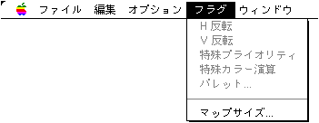

★Graphic Tools Guide
★MAP/SCREENエディタユーザーズマニュアル
★Graphic Tools Guide
★MAP/SCREENエディタユーザーズマニュアル
▲
戻る｜
進む▼
MAP/SCREENエディタユーザーズマニュアル
■フラグメニュー

- マップウィンドウがアクティブな場合使用できます。セガサターンVDP2の各種フラグを設定します。
- ●H反転
- 指定範囲のパターンネームにH反転フラグを設定します。
- ●V反転
- 指定範囲のパターンネームにV反転フラグを設定します。
- ●特殊プライオリティ
- 指定範囲のパターンネームに特殊プライオリティフラグを設定します。
- ●特殊カラー演算
- 指定範囲のパターンネームに特殊カラー演算フラグを設定します。
- ●パレット...
- 指定範囲のパターンネームのパレットを変更します。
編集ファイルの「カラーモード」や「パターンネームサイズ」によって設定可能な範囲が変化するので注意が必要です。
- ●マップサイズ
- マップウィンドウの編集領域を変更します。マップサイズをページ単位で入力します。
変更後のサイズが、現在編集中のマップサイズより小さい場合、編集領域が切り取られますので、注意が必要です。
▲
戻る｜
進む▼
★Graphic Tools Guide
★MAP/SCREENエディタユーザーズマニュアル
Copyright SEGA ENTERPRISES, LTD., 1997